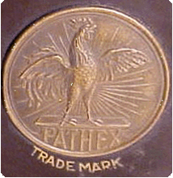
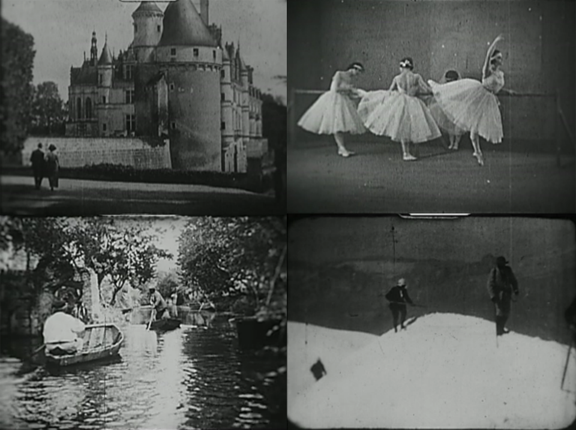

Pathé Baby
Since the summer of 2008, when Professor Rubén Gallo first entered a tiny French antique shop and discovered a 1920s Pathé-Baby home movie projector along with approximately eight hundred 9.5 mm silent films, we have been working to bring this material into the classrooms of Princeton University.
Thanks to the generous support of Lynn Shostack and the David A. Gardner '69 Magic Project in both 2009 and 2010, we were able to partner with the Colorlab Preservation Laboratory of Rockville, Maryland, which is one of the few companies in the United States capable of undertaking the arduous process of hand-cleaning, replasticizing, and transferring the 9.5 mm film stock to a digital medium. Each film was treated individually, and a pause was inserted at a total of 11,067 title frames to give enough time for them to be read.
The first group of digitized films is now available for viewing. We are extremely grateful to Lynn Shostack and the Gardner fund, along with the entire Council of the Humanities, led by Executive Director Carol Rigolot, for their support and encouragement of this magical project.
